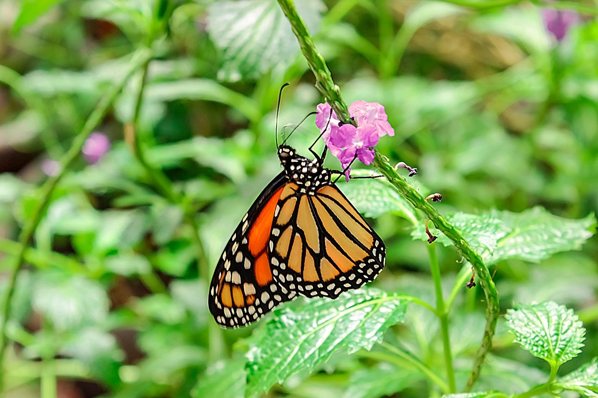

Green Initiatives
Waverly is committed to building a greener, more sustainable future. Our Green Initiatives promote environmental responsibility, renewable energy, and eco-conscious development through partnerships and forward-thinking programs.
Environmental Priorities
- Promote renewable energy projects including solar and wind partnerships.
- Support green building practices and energy-efficient infrastructure.
- Expand green spaces and tree planting in urban development areas.
- Offer incentives for eco-friendly commercial and residential developments.

Renewable Energy
Waverly partners with developers on solar and wind integration projects.

Green Building
We encourage sustainable materials and energy-saving construction practices.

Greener Communities
Tree planting, park development, and nature-based solutions are core to our mission.